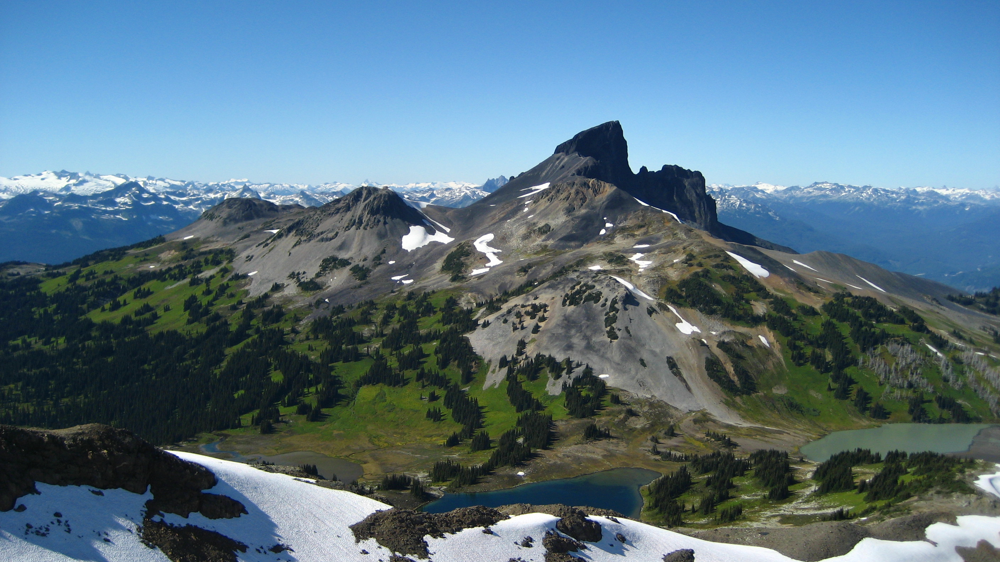

BLACK TUSK
DESCRIPTION
The dark, jagged edges of Black Tusk make it one of the most scenic and unique hikes in southwestern British Columbia. Located in Garibaldi Provincial Park, Black Tusk is the most spectacular mountain in the area. While many hikers do complete this trail in a day, the distance and elevation gain make for a very long day. For this reason, some people prefer to hike to Garibaldi Lake or Taylor Meadows and camp overnight, and then hike to Black Tusk the following day. It is up to you which you prefer, however if you do decide to do this in a day, make sure to leave plenty of time to return to the parking lot during daylight hours. Start your hike from the wooden steps in the upper section of the Rubble Creek parking lot. The dirt trail climbs steadily for the first 6km until you reach a junction. Going right takes you to Garibaldi Lake, so take the trail to the left to head up towards Taylor Meadows and eventually on to Black Tusk. The trail continues to climb gradually eventually emerging from the forest and into more wide open space as you enter into Taylor Meadows. Continue along the trail as it enters into the Taylor Meadows campsite area. Pass the camping area and continue along the trail as it meanders through the meadows. In the late summer and early fall, the alpine flowers are in full bloom and their beautiful colours are scattered across the land like a beautiful piece of art. Eventually, you arrive at a junction with a map and wooden bench. Continue going straight along the trail for a short distance and watch for a sign and trail on your left that point the way to Black Tusk. Take this trail and immediately start your uphill trek. The trail climbs quickly, passing over small runoff streams and evidence of rockslides that have occurred over thousands of years. As you gain elevation, look back occasionally at the view of Garibaldi Lake below. As the trail continues, the trees and vegetation become fewer eventually giving way to a completely rocky terrain. The trail emerges onto a small ridge at a BC Parks sign with a full view of Black Tusk ahead of you. From this point on, BC Parks does not maintain a trail, however evidence of a path is still visible from the many hikers who trek through here each year. The next section of trail is a scramble over loose shale towards the base of the Tusk. Read the BC Parks sign carefully and understand that continuing further is at your own risk. Passing the BC Parks sign will begin with a steep uphill climb. The loose shale slides with each step you take making it seem like you slide back one step for every two steps you move forward. The trail eventually emerges onto a ridge next to the base of the Tusk that offers a scenic view of the entire area surrounding Garibaldi Lake. Be careful on the loose rocks as some of the cliffs in the area are high enough to cause very serious injuries or even death. Most hikers end their hike to the Tusk at this point before heading back. Although it is possible to make it onto the peak of the Tusk it is not recommended as it is extremely dangerous and discouraged by BC Parks. However, it is sometimes attempted by experienced rock climbers with the proper equipment and training. To reach the chute that you can climb to the top, follow the base of the Tusk, stepping carefully to make sure you don't slide down the hill. The shale is very loose and pulling yourself up through the chute generally pulls off pieces of rock from the Tusk. Even experienced rock climbers must keep in mind that they have to come back down this same route. After enjoying the view, it's time to head back down the way you came. Without a clear trail or markings, watch for worn areas of the trail where other hikers have been and aim for the large BC Parks sign that you passed on your way up. Once at the BC Parks sign the trail markings appear as does the vegetation. Continue back down the path towards Taylor Meadows and go right when you reach the junction of the main trail. Back at the Taylor Meadows junction, it is possible to do a side trip to Garibaldi Lake and return a different route to the parking lot if time permits. If you're short on time, go straight through Taylor Meadows, back the way you came to the first junction. However, if you have a bit of extra time and energy, go left towards Garibaldi Lake. After a bit more walking through the meadows and a downhill section through a series of switchbacks that head down to the lake, a trail appears on the left. Follow the trail as it merges with the river and cross the bridge to the other side. Walk along the lake side to the clearing to see a full view of the lake and glacier. On a hot day, the cold water of Garibaldi Lake can feel nice to dip your feet into. After you have rested and taken in the lake view, head back towards the bridge crossing the river and back up the steep dirt trail. Turn left at the sign and continue for the next 3km, passing two smaller lakes before reaching the first junction. From this junction, continue straight for the next 6km back towards the Rubble Creek parking lot. The sound of Rubble Creek far below starts to get louder as you near your destination.